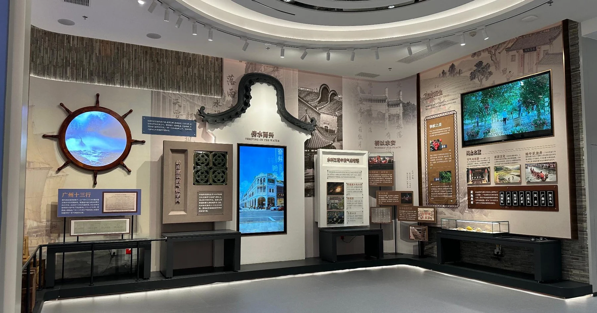
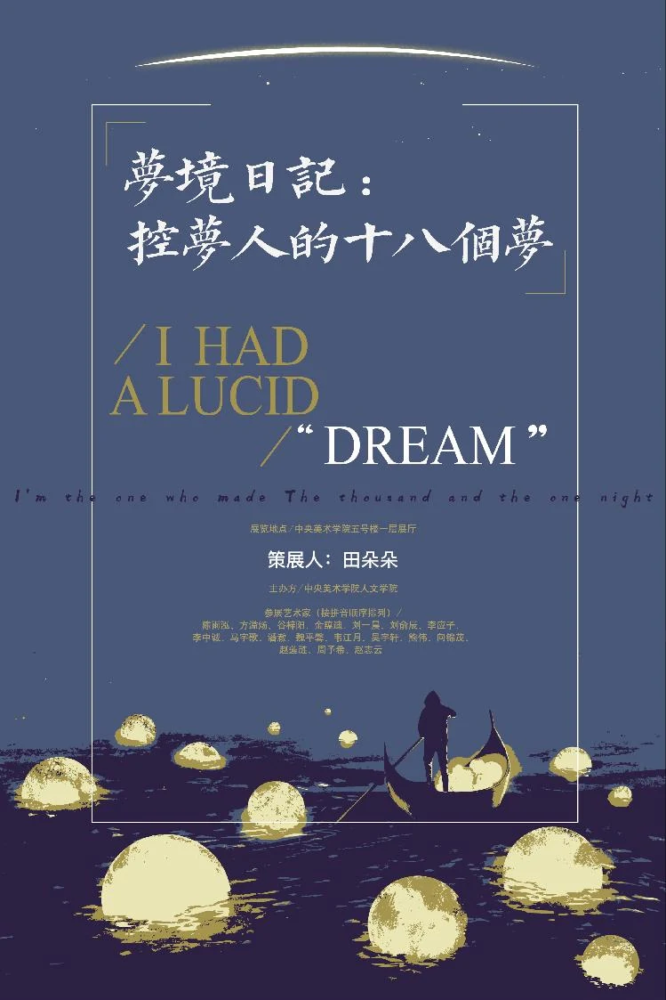
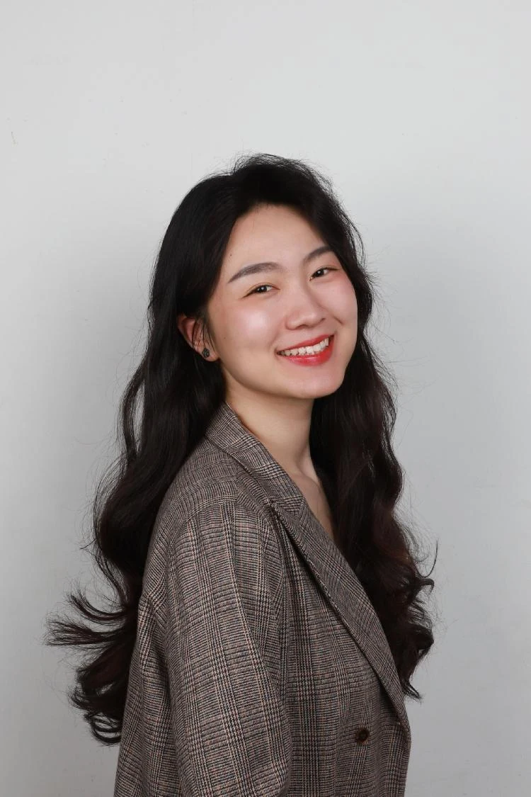

2025.04 — 至今
中国气象局华风气象传媒集团
策划 / 项目经理 / 设计辅助
全程跟进气象科普展馆、史志馆、主题园区、4D 影院与线上数字平台等 12 个项目。统筹商务、策划与供应商协作，完成展馆、视频、游戏策划及分镜、IP 与交互流程设计，跟进落地执行。


01 / SELECTED WORK
从史馆到数字岛屿，从学术文本到观众体验。
MY PRACTICE / 我的工作方式
从调研的第一条线索，到开放后的每一次体验，把内容、设计、技术与执行接起来。
艺术史与文化遗产研究、案例调研、场馆定位、展览大纲与展陈文字。把复杂材料梳理成清楚的叙事线索。
调研分析 / 展陈叙事 / 学术写作游戏世界观与交互脚本、影视分镜、IP 形象、场景手绘及 UI 草图。用文字、图像和交互，把想法变得可见、可体验。
游戏策划 / 多媒体脚本 / 手绘与平面设计从客户沟通、方案汇报，到招投标、合同、采购与供应商对接；协调内容、技术与执行环节，跟进质量、预算和交付。
商务沟通 / 成本控制 / 跨团队协作美育活动与研学路线开发、线上线下活动执行、新媒体矩阵运营与艺术公关。让场馆开幕之后，内容仍能持续生长。
美育研学 / 活动策划 / 品牌与新媒体02 / ABOUT ME
你好，我是田朵朵。
七年央美学习经历，让我习惯从文化与艺术史中寻找线索。项目实践则让我不断思考：如何把这些线索，变成公众愿意走近的内容与体验。
我的工作跨越展陈策划、数字互动、文旅研学与艺术传播。在策划之外，我也画画、做插画、带领艺术工作坊——保持观察，也保持动手创作的习惯。
连续三年研究生全额奖学金
王式廓吴咸奖学金一等奖 · 成绩前 5%
北京市优秀毕业生 · 优秀毕业论文奖
央美科研之星 · 研究生推免 · 成绩前 5%
工具与语言Office / Illustrator / Premiere / 手绘与板绘 / IELTS 7.0

2025.04 — 至今
策划 / 项目经理 / 设计辅助
全程跟进气象科普展馆、史志馆、主题园区、4D 影院与线上数字平台等 12 个项目。统筹商务、策划与供应商协作，完成展馆、视频、游戏策划及分镜、IP 与交互流程设计，跟进落地执行。
2024.12 — 2025.02
图书选题策划 / 活动策划 / 新媒体运营
参与图书选题与作家约稿，编辑官方社交媒体内容，维护媒体与 KOL 关系，联合文化场馆、书店开展新书发布活动。
2023.08 — 2024.05
展陈策划 / 文旅 IP 策划
参与宁波河海博物馆新馆前期研究，完成场馆功能定位、同类型馆调研与展览结构大纲；提出文旅 IP 项目并获得资金支持。
2023.05 — 2023.07
公关专员
撰写展览活动新闻稿与发言稿，参与媒体见面会、藏家活动及艺术传播，开展媒体关系维护与舆情监测。
策展人 · 参与《布列塔尼之光：坎佩尔美术馆藏品》展览大纲、50 余件艺术品解读与展览上墙文字撰写。
产品运营 · 与全国 40 余所高校建立市场商务合作，参与市场与竞品调研，经手项目销售额 40 万元以上。
艺术部主任老师 · 面向美国青少年教授中国艺术，组织中国青少年赴美开展为期三周的调研活动。
展览专员 / 活动策划 / 新媒体运营 · 参与展陈、开幕式、讲座与研讨会，运营微博与小红书官方账号。
展陈与活动策划 · 馆藏学术研究、美育讲座、艺术工作坊及文创销售内容策划。
插画师 · 为艺术科普书籍绘制 30 余幅插画，协作完成封面与内页视觉设计。
策展人 · 参与《百年无极》展览大纲、艺术品解读、观展活动与宣讲导览。
展厅全案策划 · 独立策办《梦境日记：控梦人的 18 个梦》，完成策划、视觉与空间呈现。
游戏策划师 · 策划古建筑解密游戏卡整体故事脚本，获工作坊比赛一等奖。
学术研究 / 媒体传播 · 参与藏品学术文章、微信公众号内容与拍卖图录美术编辑。
RESEARCH / 研究与写作
策划之外，
持续追问文化的意义。
《温柔的野心：安格尔〈朱庇特与忒提斯〉的双重叙事》发表于《跨文化美术史年鉴》
《文旅融合背景下艺术对地方文化产业的驱动效应研究》宁波博物馆学术研讨会 · 收录会议论文集
《数字化技术在浙江传统建筑文化遗产保护中的创新应用与挑战》浙江大学文化遗产保护研讨会 · 收录会议论文集